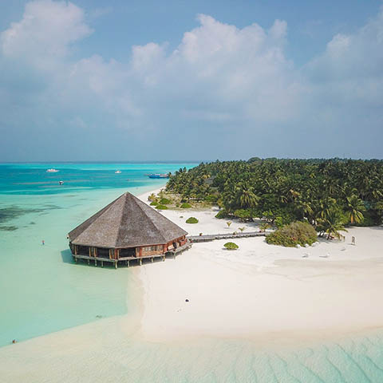

Тур на Мальдивы
{kind=link}
Описание товара
Мальдивы - это отдых на великолепных пляжах, чистейшая вода, потрясающий подводный мир. Многочисленные виды кораллов, чрезвычайно богатый подводный мир и кристально чистая вода (видимость под водой - до 40 метров!) сделали Мальдивские острова "Меккой" для аквалангистов всего мира. На каждом курорте есть центр подводного плавания, дающий возможность новичкам получить сертификаты международного образца. Буквально в 20 метрах от номера, плавая с трубкой и маской, можно увидеть практически всех обитателей океана. Туры на Мальдивы также понравятся вам отсутствием каких-либо визовых процедур и формальностей, а также тем, что не нужно делать никаких прививок. Это очень важно для российского рынка, так как российские туристы зачастую не имеют возможности планировать свой отпуск заранее.
Характеристики товара
- Всегда в наличии!
- Очень красиво!
- Очень жарко!
- Очень дорого!
| Дата вылета | Продолжительность | Стоимость |
| 1 авг 2020 | 12 дн | $990 |
Подробное описание товара
Самолет выныривает из ночи и радостно поворачивает к Мальдивам. Первые атоллы видны в иллюминатор, пока самолет еще на эшелоне, на самой высоте. Вокруг только бескрайний океан, в котором молочными кляксами расплываются рифы. Сна не остается ни в одном глазу, а те счастливчики, которым повезло сидеть «у окошка», прилипают к нему так, что оторвать можно только с куском обшивки. Та же сине-голубая картинка, но в меньшем масштабе, транслируется на экраны. Каникулярное настроение волнами плещется в салоне. Самолет окунает крыло в самый центр какого-то курортного острова с бисеринками коттеджей на воде, поворачивает и идет на посадку. Километр, пятьсот метров, двести, двадцать… под шасси все еще вода. А-ааа, где полоса? На последних метрах шасси касаются чего-то твердого: ура, товарищи, приветствуем вас в славном городе Мале.
Впрочем, с земли он не такой и славный: простые бетонные дома без украшательств и постоянная стройка. Но мне туда вроде и не надо. До столицы, была бы у меня такая потребность, с аэропортового острова Хулуле надо было бы добираться на соседний остров. Привыкай, родная: в этих местах жесткая специализация. Остров-столица, остров-аэропорт, остров-курорт, есть даже остров-тюрьма и остров-мусорная свалка. Последнее меня тоже не привлекает, а путь мой лежит на атолл Северный Ари (он же Алиф Алиф), который находится южнее столицы. И теперь меня везут в аэропортовом автобусе в локальный терминал, откуда до любых богом забытых атоллов летают местные гидропланы. Я насчитала штуки 4 местных компаний, которыми можно попасть на острова. Мои полеты на сегодня еще не закончились.